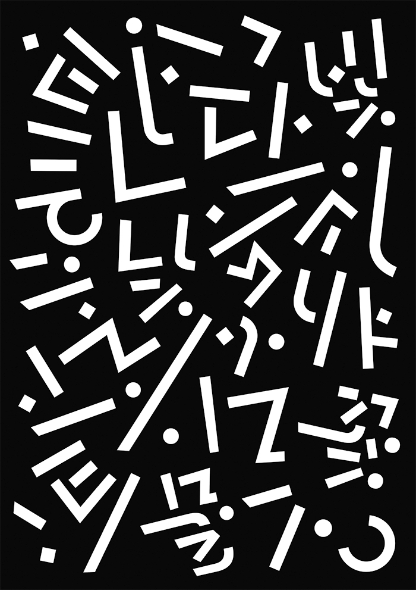

역사적으로 확인할 수 있는 최초의 플랜테이션은 포도주와 올리브유의 거대한 수요를 공급하던 고대 로마의 라티푼디움이라 할 수 있다. 하지만 현재의 플랜테이션은 대부분 제국주의시대에 기원을 두고 있다. 즉 16~17세기부터 식민지의 토지와 기후, 노동력을 이용하여 유럽권에서 고부가가치를 지닌 작물들을 경작해 왔다. 2차 세계대전 이후 식민지가 독립하면서 농장의 경영권이 국유화되어 현지인이 경영하게 되었다. 재배작물 중 대체소재가 개발되어 수요가 줄어든 마, 목화 등의 섬유, 염료 및 고무같은 작물들은 상당수 줄어들었다. 하지만 아직도 세계적으로 경제성이 있는 상품작물들은 이런 농업방식이 유지되고 있다. 덕분에 과거 값비싼 작물들이 세계 시장에서 저렴한 시장가격을 유지한다. 그러나 경영주체가 달라졌을 뿐 경영방식이 여전히 과거와 같은 불공정한 저임금, 착취노동에 의존하는 문제가 남아있고, 이를 해소하기 위해 공정무역과 같은 사회운동이 일어나고 있다. 경영방식상 불법적이고 폐쇄적이기 때문에 마약과 불법작물 역시도 이런 방식으로 경작되어 범죄조직과 엮여 경영된다.